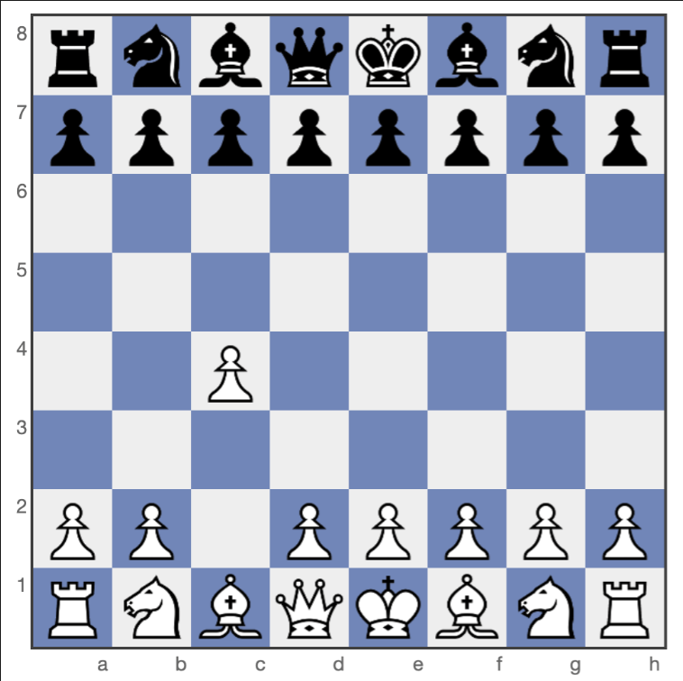

A Abertura Inglesa se inicia com o lance 1.c4 e representa uma das escolhas mais estratégicas e respeitadas do xadrez moderno. Em vez de ocupar o centro de forma direta com o avanço de um peão central, as brancas utilizam um peão lateral para exercer controle à distância sobre a casa d5, adotando uma abordagem hipermoderna que prioriza a flexibilidade e a estrutura de jogo de longo prazo. Sua origem remonta ao século XIX, recebendo esse nome em homenagem ao enxadrista inglês Howard Staunton, que a popularizou em seu histórico confronto contra o francês Pierre Saint-Amant em 1843. Ao longo do século XX e nos dias atuais, a abertura consolidou sua reputação de extrema solidez e profundidade, tornando-se uma arma frequente no repertório de grandes campeões mundiais como Mikhail Botvinnik, Anatoly Karpov, Garry Kasparov e Magnus Carlsen. A dinâmica da Abertura Inglesa gira em torno do controle do espaço e do posicionamento harmonioso das peças. Um dos planos mais tradicionais das brancas envolve o desenvolvimento do bispo da ala do rei em fianchetto após o lance 1.g3, posicionando-o na grande diagonal para pressionar o centro e a ala da dama. Além disso, a flexibilidade da estrutura permite às brancas transpor a partida para aberturas do Peão da Dama no momento mais conveniente ou derivar para uma Defesa Siciliana Invertida quando as pretas respondem com 1...e5, garantindo às brancas a vantagem de jogar a estrutura da Siciliana com um tempo a mais. As respostas das pretas ditam o caráter do combate, podendo variar desde posições espelhadas e manobradas no Sistema Simétrico (1...c5) até confrontos mais dinâmicos quando tentam o domínio central imediato. Por exigir menos memorização de variantes táticas forçadas e focar mais em conceitos como controle de casas fracas e planos de peões, a Abertura Inglesa permanece como uma excelente escolha para enxadristas que buscam posições sólidas e ricas em recursos estratégicos.